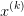
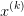
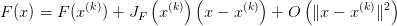
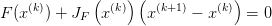
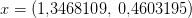

5.1 O método de Newton para sistemas
Vamos agora construir o método de Newton-Raphson, ou seja, o método de
Newton generalizado para sistemas. Assumimos, portanto, que a função  é
diferenciável e que existe um ponto
é
diferenciável e que existe um ponto  tal que
tal que  . Seja
. Seja  uma
aproximação para
uma
aproximação para  , queremos construir uma nova aproximação
, queremos construir uma nova aproximação  através da linearização de
através da linearização de  no ponto
no ponto  .
.
- Linearização da função
 no ponto :
no ponto :
 - A aproximação
 é definida como o ponto
é definida como o ponto  em que a linearização
em que a linearização
 é nula, ou seja:
é nula, ou seja:

Supondo que a matriz jacobina seja inversível no ponto  , temos:
, temos:
Desta forma, o método iterativo de Newton-Raphson para encontrar as raízes
de  é dado por:
é dado por:
 |
Observação 5.1.1. Usamos subíndices para indicar o elemento de um vetor
e super-índices para indicar o passo da iteração. Assim  se refere à
iteração
se refere à
iteração  e
e  se refere à componente
se refere à componente  no vetor
no vetor  .
.
 enfatiza que a jacobiana deve
ser calculada a cada passo.
enfatiza que a jacobiana deve
ser calculada a cada passo.
Observação 5.1.3. Podemos definir o passo  como
como

 , ou seja,
, ou seja,  resolve o problema linear:
resolve o problema linear:

 .
.
Exemplo 5.1.1. Retornamos ao nosso exemplo inicial, isto é, resolver numericamente os seguinte sistema não-linear:

 :
:
 |
cuja jacobiana é:
 |
Faremos a implementação numérica em Python. Para tal definimos as funções
que implementarão  e a
e a 
... y = np.zeros(2)
... y[0] = x[0]**2/3 + x[1]**2 - 1
... y[1] = x[0]**2 + x[1]**2/4 - 1
... return y
...
>>> def JF(x):
... y = np.zeros((2,2))
... y[0,0] = 2*x[0]/3
... y[0,1] = 2*x[1]
... y[1,0] = 2*x[0]
... y[1,1] = x[1]/2
... return y
...
Desta forma, se  é uma aproximação para a raiz, pode-se calcular a próxima
aproximação através dos comandos:
é uma aproximação para a raiz, pode-se calcular a próxima
aproximação através dos comandos:
>>> x = x + delta
Ou simplesmente
Observe que as soluções exatas desse sistema são  .
.
Exemplo 5.1.2. Encontre uma aproximação para a solução do sistema

Solução. Vamos, aqui, dar as principais ideias para se obter a solução usando
o método de Newton. Começamos definindo nossa aproximação inicial por
 . Então iteramos:
. Então iteramos:
 |
onde
 |
e sua jacobiana é
|
|
As iterações convergem para .
Em Python, podemos implementá-las com o seguinte código:
y = np.zeros(2)
y[0] = x[0]**2 - np.cos(x[0]*x[1]) - 1
y[1] = np.sin(x[1]) - 2*np.cos(x[0])
return y
def JF(x):
y = np.zeros((2,2))
y[0,0] = 2*x[0] + x[1]*np.sin(x[0]*x[1])
y[0,1] = x[0]*np.sin(x[0]*x[1])
y[1,0] = 2*np.sin(x[0])
y[1,1] = np.cos(x[1])
return y
E agora, basta iterar:
>>> x=x-np.linalg.inv(JF(x)).dot(F(x))

5.1.1 Código Python: Newton para Sistemas
Exercícios
E 5.1.1. Encontre uma aproximação numérica para o seguinte problema não-linear de três equações e três incógnitas:

![x(0) = [1, 1, 1]T](main2470x.png)
![x(0) = [- 0,5, - 2, - 3]T](main2471x.png)
![(0) T
x = [- 2, - 3, - 4]](main2472x.png)
![x(0) = [0, 0, 0]T](main2473x.png)
* As versões do livro disponíveis no site podem estar desatualizadas, veja a versão PDF atual no repositório GitHub oficial do projeto.
- IME - UFRGS